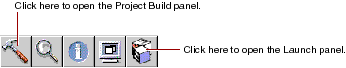
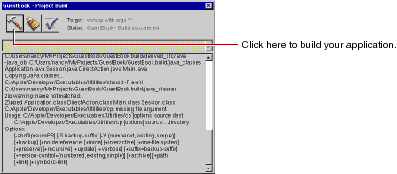
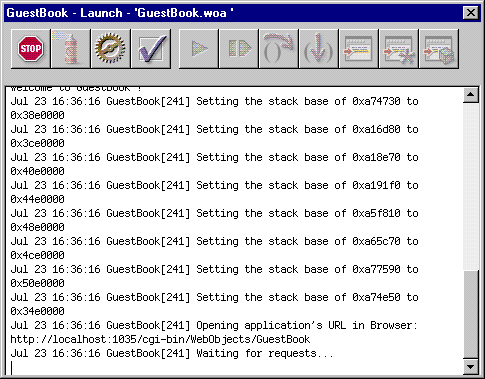

Table of Contents
Table of Contents  Previous Section
Previous Section
pull-down menu at the bottom of the window.
To build and launch your application, you use buttons in Project Builder's toolbar.

 in the toolbar to open the Project Build panel.
in the toolbar to open the Project Build panel.
 in the Project Build panel.
in the Project Build panel.

The Project Build panel displays the commands that are being executed to build your project. If all goes well, it displays the status message "Build succeeded."
 in the toolbar to open the Launch panel.
in the toolbar to open the Launch panel.
The Launch Panel displays a series of messages. If all goes well, you should see messages such as the following, which mean that your application is running successfully.

Your web browser (such as Netscape Navigator or Internet Explorer) should launch automatically and load the correct URL for your application.
If all goes well, your page should look like the one shown at the beginning of this chapter.
 Next Section
Next Section